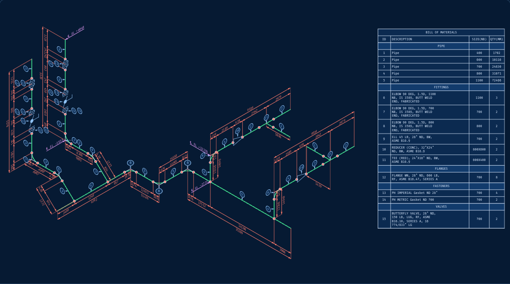

Isometrics
Take a Plant 3D model to a finished, annotated isometric on your template: dimensions, elevations, balloons and bill of materials, as native CAD you can keep editing.

Drawings · models · plant data
Plants are designed, built and run from documents that people still redraw and retype by hand. Cadmium turns them into each other: 3D models into isometrics, 2D drawings into 3D, P&IDs into connected data.
Products
Edit the inputs and watch them respond. Every product has a working demo on its page.
Take a Plant 3D model to a finished, annotated isometric on your template: dimensions, elevations, balloons and bill of materials, as native CAD you can keep editing.

Recover a solid from orthographic views. Sketch on any view and the part rebuilds as you draw; views that contradict each other are marked. Download the result as STL.

Read a scanned P&ID from its pixels into symbols, tags and connectivity, then ask it things: which valves isolate this pump? Break the scan and watch the score fall.

Capabilities
How we build
Deliverables are native CAD entities and structured data that fit how your team already works, never flattened images you have to redraw.
Everything is tied back to its source. Read a tag and you can see where on the drawing it came from; rebuild a model and it is projected back onto the views.
Results come with their scores, not just their answers. An engineering tool that hides its error rate is not one you can put in a workflow.
Get in touch
A model that needs isometrics, a stack of scanned P&IDs, a legacy plant with no 3D. Tell us what you are working with.